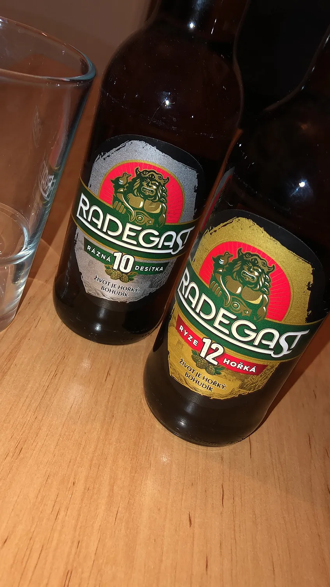
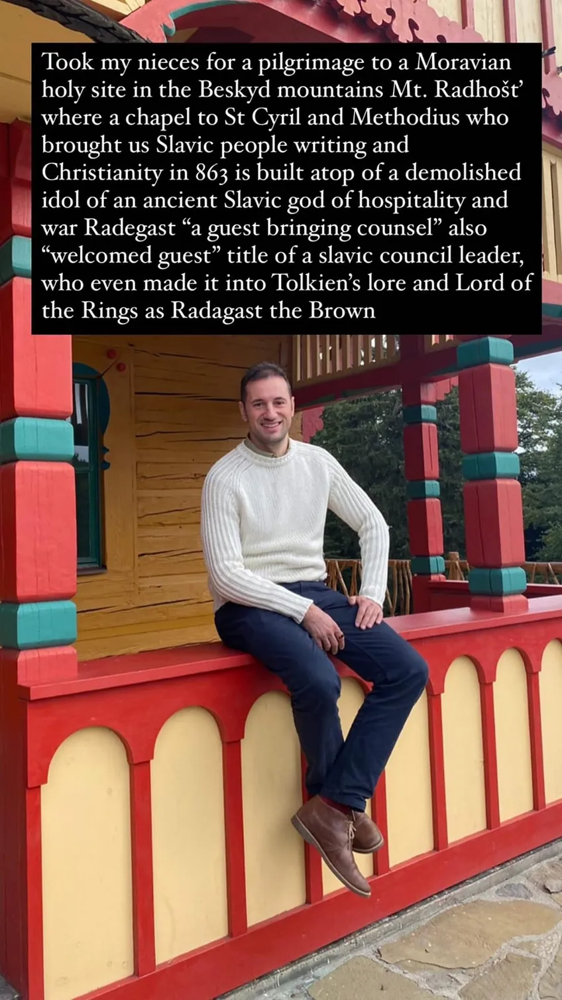

Radegast
Czech lager, Legend, king, Slavic god and a common ancestor of the English and Slovak
Radegast is still a brand of my local full bodied bitter lager. His shrine-church on a mountain top of Radhošt near Czech-Slovak borders worshipped along with early Christian missionaries whose statues are there too. Rade for advice. Gast for guest and host. An ancient Slavic name and title for a person whose advice is as welcome as not to be refused. In he dies leading an army of 100,000 towards Rome, 20,000 of which were fighting men. Recorded as “gothic” king Radagaisus, but wait… his name is clearly Slavic and Gothic is a Germanic language. Radogošč was also later a name of a largest most western Slavic settlement in the area of today's Mecklenburg. He died but his forces later joined Alaric in last sacking of Rome.
* My nieces don’t think it’s a Church either
After that Slavic history seems muddled and Slavic tribes only appear 200 years later on the Northern borders of Byzantine empire?
Unless the theory of the development of Germanic languages being an interface pidgin between Latin and Slavic languages with paleo European roots has some substance to it, history doesn't quite add up.
It doesn't help professor Tolkien dragged Radegast into the lore of middle earth as a wizard Radegast the brown, but our historical Radegast would surely find it amusing.

* Life is bitter. Thanks Lord
We know of him also from records of the Roman slave market crash after his death caused by a huge amount of taken captives. I am afraid the Latin word sclavus and later English word slave have origins here, taken from Slavic languages where Slovo/Slava means word and also fame and Slavic and Slovak are therefore people who talk alike. We all heard Slava Ukraini said a lot lately but now you start to feel the other vibration of the words. No wonder these Goths sacked Rome being taken for captives and enslaved for generations.
Roman names for different ethnicities just aren’t well mapped to modern nations of Europe thanks to the murky dark ages.
There’s a knowledge gap possibly caused by lack of texts but I feel until recently also for political reasons. We don’t know what we don’t know.
I am really keen on intersections of Czech-Slovak and English history as they seem so swept under the carpet.
One interesting fact I dug out was an English king Edward the Exile 1016-1057 exiled in then great Hungary taking a wife of “undocumented” origin Agatha, which must have been a local Slovak woman by her name. Her issue included St Margaret of Scotland.
Mate, you may be English, I am Slovak but this research of mine pushes the Most Recent Common Ancestor between large swaths of the population if not all of us together half a millennium forward from what would have been acceptable before.
Genetically and despite larger language differences English and Slovak are almost as much brothers as Slovak and Russian. It’s more like if any Russian is a brother which is a historical communist political rhetoric in what used to be the Eastern block. English is not really a 2nd or 3rd cousin, but more like a brother, half-brother or 1st cousin. While Russian text transliterated to latin alphabet and read aloud by a Slovak speaker sounds a lot like Slovak due to thus minimised pronunciation differences, English is not that far either.
F**ked up fact, Rus word origin is cognate with old English “rows” … for men who row also related to Byzantine Varangian guard who would row the Black Sea to get to Constantinople, a place where king Harald Hardrada or Harald “tough advice” also a lead of Varangian guard raised money for taking over England just before William the conqueror beat him to it. You can see Rada in his nickname or title just as with Radegast. Haralds wife was Slavic too, daughter of Yaroslav the great.
READ - Old English rǣdan, of Germanic origin; related to Dutch raden and German raten ‘advise, guess’. Early senses included ‘advise’ and ‘interpret (a riddle or dream’)
REDE - to give counsel to : advise.
BOOM Pre-writing times semantics.
Reading written rede riddles shows our language heritage brimming with undeletable hardcoded historical detail.
— Francis Malina
https://somstrom.com
